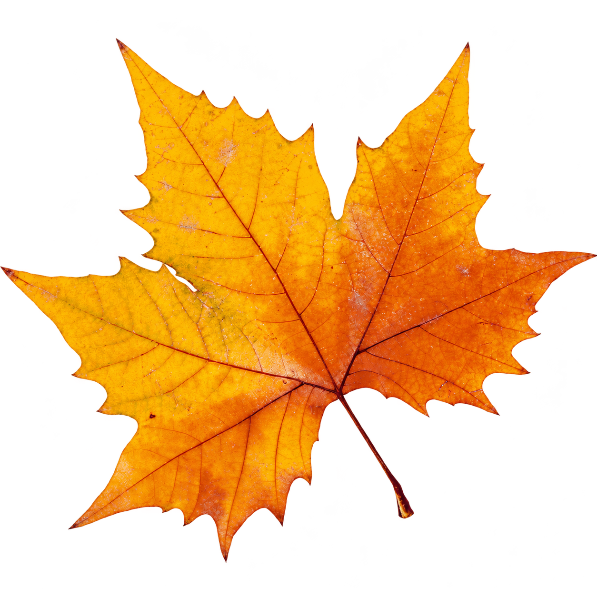

自然观察实验室 / VOL. 001TIME MOVES. NATURE FOLLOWS.
03AUTUMN09 — 11
一叶知秋，
万物有时。
从一抹金黄，到一场温柔的告别。
让风经过，让时间慢慢显影。
＋ 移动指针，让风有了方向

ACER / 枫叶
一片叶，收藏整个季节。NO. 001
一片叶，收藏整个季节。NO. 001
环境观测 SIMULATED
风速1.8 m/s
叶片状态缓缓飘落●
向下滚动，走过四季SCROLL TO FEEL THE CHANGE↓
00 / ∞四季往复 · 生生不息